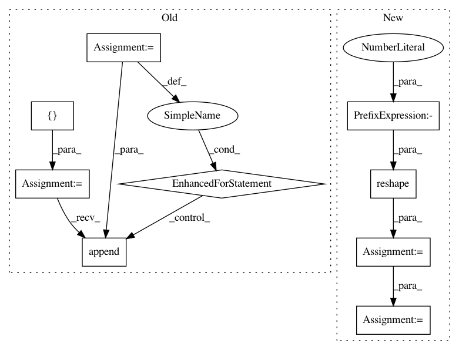

e18e682858c57124d46c40e8ab1d136c009a1f69,kornia/geometry/homography.py,,find_homography_dlt,#Any#Any#Any#,10
Before Change
ax = torch.cat([zeros, zeros, zeros, -x1, -y1, -ones, y2 * x1, y2 * y1, y2], dim=-1)
ay = torch.cat([x1, y1, ones, zeros, zeros, zeros, -x2 * x1, -x2 * y1, -x2], dim=-1)
w_list = []
axy_list = []
for i in range(points1.shape[1]):
axy_list.append(ax[:, i])
axy_list.append(ay[:, i])
w_list.append(weights[:, i])
w_list.append(weights[:, i])
A = torch.stack(axy_list, dim=1)
w = torch.stack(w_list, dim=1)
// apply weights
After Change
// DIAPO 11: https://www.uio.no/studier/emner/matnat/its/nedlagte-emner/UNIK4690/v16/forelesninger/lecture_4_3-estimating-homographies-from-feature-correspondences.pdf // noqa: E501
ax = torch.cat([zeros, zeros, zeros, -x1, -y1, -ones, y2 * x1, y2 * y1, y2], dim=-1)
ay = torch.cat([x1, y1, ones, zeros, zeros, zeros, -x2 * x1, -x2 * y1, -x2], dim=-1)
A = torch.cat((ax, ay), dim=-1).reshape(ax.shape[0], -1, ax.shape[-1])
if weights is None:
// All points are equally important
A = A.transpose(-2, -1) @ A
else:
// We should use provided weights
assert len(weights.shape) == 2 and weights.shape == points1.shape[:2], weights.shape
w_diag = torch.diag_embed(weights.repeat(1, 2))
In pattern: SUPERPATTERN
Frequency: 3
Non-data size: 9
Instances
Project Name: arraiy/torchgeometry
Commit Name: e18e682858c57124d46c40e8ab1d136c009a1f69
Time: 2020-10-06
Author: daniel.koguciuk@gmail.com
File Name: kornia/geometry/homography.py
Class Name:
Method Name: find_homography_dlt
Project Name: dmlc/gluon-cv
Commit Name: ecfc31e21d0c30b1f543aacb8619582b60a1bef7
Time: 2019-08-29
Author: spanev@nvidia.com
File Name: gluoncv/model_zoo/mask_rcnn/rcnn_target.py
Class Name: MaskTargetGenerator
Method Name: hybrid_forward
Project Name: SpiNNakerManchester/sPyNNaker
Commit Name: 148f63289a3fb4b809d6b5d63feaddf3e64bed26
Time: 2018-03-01
Author: andrew.gait@manchester.ac.uk
File Name: spynnaker/pyNN/models/neural_projections/connectors/multapse_connector.py
Class Name: MultapseConnector
Method Name: create_synaptic_block